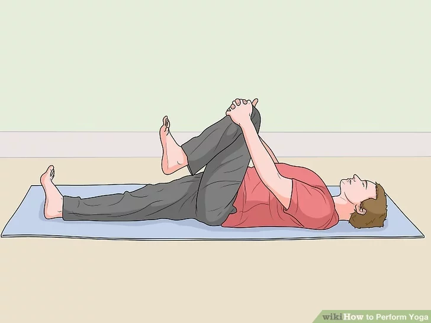

Yoga Steps
Use the time before class to warm up and center yourself. Yoga is all about the connection between you and your body. To get the most out of class, spend some time stretching. Focus on the sensations in your body as you do so. Concentrate on breathing deeply in and out. Taking a moment to relax and center yourself can help you to get a lot more out of your class.

Try a variety of poses. Poses – or asanas – are the different positions you take during yoga. If you are in a class, the instructor will direct you into various positions and help you adopt the proper alignment. For a library of poses, as well as some sequences that are good for beginners, consult Yoga Journal or Yoga Basics. You can also try starting with these basic poses:
- Knees to chest (apanasana) – Lie on your back, draw both knees towards your chest, and hold your shins if necessary. Gently rock side to side to massage your lower back. Hold for 8-10 breaths.
- Supine twist – Start with knees to your chest. Lay your arms out to either side so you form a T. Drop your knees to the right, one stacked on the other. Hold for 4-5 breaths and then repeat on the other side.
- Cat-cow pose – Start on your hands and knees, with your shoulders aligned with your wrists and your hips over your knees. As you inhale, arch your spine and lift your head to look up. As you exhale, round your spine and lower your head to look back towards your navel. Repeat 4-5 times.
- Mountain pose – Stand tall with feet together, your weight evenly distributed on both feet, and your arms at your sides. Take a deep breath and raise your hands over your head with your arms straight and palms facing one another. Hold for 4-5 breaths, then repeat 4-5 times.
- Downward dog – Start on all fours with your hands aligned with your shoulders. Walk your hands forward a few inches and spread your fingers. With feet hip-width apart and knees slightly bent, press your hips towards the ceiling so that your body forms an inverted V. Hold for 3 breaths.
- Cobra – Start prone on your stomach, with your hands on the floor under your shoulders and your elbows tucked into your body. As you inhale, keep your pelvis touching the floor while you straighten your arms so that your torso bends backwards and your chest lifts off the floor. Hold for 4-5 breaths.
- Child's pose – A good pose to end on. With your big toes pointed and touching, sit back on your heels, then stretch out forward with your arms straight so that your fingertips, forehead, and knees are touching the floor. Breathe deeply.
Concentrate on your breathing. Yoga uses a technique of controlling breathing, or pranayama, which is just as important as the poses you adopt. There are many types of breathing used during yoga; for a complete guide to pranayama consult Yoga Journal. The basic three types you will need are:
- Quiet breathing (natural without effort) – It is typically used during the ending period of relaxation and meditation.
- Deep breathing (long, deep breaths) - Yoga that focuses on relaxation, or during which the poses are held for a long time, often emphasizes deep breathing.
- Fast breathing (a deliberate increase in breathing rate) - More exercise-focused yoga that moves quickly from poses to pose often incorporates more fast breathing.